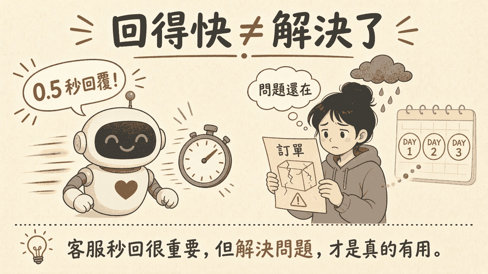
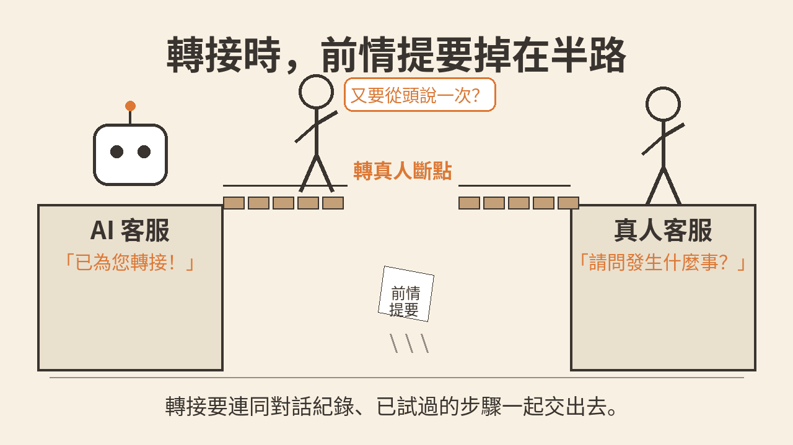
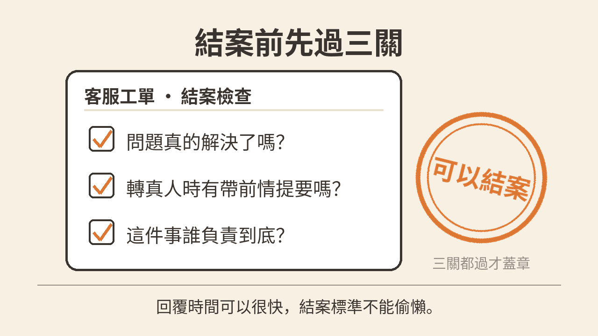

「對不起，已收到您的問題。」這句話有時來得比顧客打完字還快。訂單上的盒子仍是裂的。顧客看著這段很有禮貌的回覆，像看著一張蓋得很快的收據：字在，東西沒換。回覆速度和問題解決率是兩件事。本文沒有查核任何市場數字。要看的是三個缺口：制式回覆有沒有碰到真正的問題、轉接真人客服時前情提要有沒有帶過去、這張工單最後有沒有人負責到結案。
閱讀說明：本文為編輯依常見客服作業整理的科普短文，非整理自單一節目或供應商白皮書。文中不引用未查核的市場數字、客訴比例或研究結果。圖中的秒數與天數是示意畫面，非查核數據。也不保證改了結案方式之後，客訴就會下降。
人工智慧客服可以在顧客還沒把話說完時，先送出一段回覆。這段話常常很完整：已收到、正在處理、請提供訂單編號。計時從顧客送出，到第一則回覆出現。它回答的是：有沒有人，或有沒有系統，先開口。
問題解決率問的是另一句。顧客當初進來要處理的那件事，後來有沒有做完。訂單還是壞的、退款還沒到、地址沒改成，問題就還在。第一則回覆再快，也還沒碰到這一題。
診所叫號可以叫得很快。叫到名字，只代表輪到了。片子還沒看，病不會因為叫號而好。叫號像回覆。把病看好，才像解決。

插圖：白話科技編輯繪製／AI 輔助，非新聞照片
回覆速度回答第一句話何時出現。問題解決率回答那件事後來有沒有做完。兩份紀錄都值得留。收成同一個「客服很快」的總分，還沒解決的工單就會被蓋住。
制式回覆的形狀很固定。它確認收到、請補充資料、附上一則說明連結。這些句子對得上「我們有回」。它們對不上「盒子為什麼裂了、下一步誰去換」。
顧客再追問一次，常常收到同一段話的另一個版本。問題還在，所以同一件事被再開成下一張客訴。這裡的下一次、再下一次，是口語說法，非查核數據，只在說同一件事被重複打開。
客訴變多，有時就是這樣來的。不是因為沒有人回，而是因為每一次回覆都讓顧客確認：問題還在，所以得再來一次。
顧客跟人工智慧客服講過訂單編號、試過重新登入，也說過照片在哪。系統顯示已為您轉接。真人客服打開的工單幾乎是空的，第一句往往是：請問發生什麼事。顧客得從頭再說一次。
這中間缺的是前情提要：到目前為止的對話紀錄，以及已經試過的步驟。沒有這兩樣，轉接只完成了換人，沒有完成交接。
接力賽的棒子，裝的是已經跑過的那一段。棒子掉在兩座平台中間，下一棒就得從起跑線再跑。觀眾看見人換了。距離沒有累積。

插圖：白話科技編輯繪製／AI 輔助，非新聞照片
一張工單上可能留著人工智慧客服的回覆、一筆轉接，以及一位看過一眼的真人。結案有時發生在回覆送出之後，或對話安靜了一陣之後。顧客要處理的那件事，沒有被交到一個名字上。
沒有負責人，就沒有人在約定的時間回訪：退款到了沒有、換貨寄出沒有、地址改好沒有。顧客等不到下文，就再開一張客訴。系統裡多出來的是新單號。內容仍是同一件事。這裡說的第二次、第三次客訴，是口語說法，非查核數據，只在說同一件事被重複打開。
轉接要連同對話紀錄與已試過的步驟一起交出去。結案前要找得到誰負責。兩件裡有一件沒做，顧客就得把同一件事再講一次，或再開一張。
一張工單可以結案，要能回答：顧客進來要處理的那件事，做完了沒有。做完的證據寫在工單上，例如退款編號、換貨單號，或顧客確認問題已排除。只有已回覆，或已轉接，還停在過程。
回覆時間可以繼續記。它說明第一句話有沒有送出。它不代替結案。結案看的是問題解決，不是句子出現得早。
轉接真人客服的同一刻，附上兩樣東西。一是到目前為止的對話紀錄。二是已經試過的步驟，以及每一步的結果。真人的第一句就可以接在這些步驟之後，而不是請顧客重講。
兩樣裡缺了一樣，轉接狀態就寫成前情提要不完整。這張工單先不要當成已經交接完成。
負責人是一個叫得出名字的人，或一個明確的班次。回訪寫明時間：什麼時候確認事情做完。找不到人，工單維持未結案，並標成尚未指定。
回訪要看的是那件事的結果，不是再送一次制式回覆。退款到了、換貨寄出了、地址改好了，才算這一次回訪有著落。公司要不要因此增加整組人力，不是這一張工單的前提。
櫃檯可以很快蓋上已回覆。箱子裡的裂痕還在，這張單仍不算做完。印章要等事情做完、前情交出去、名字寫上，才蓋得下去。

插圖：白話科技編輯繪製／AI 輔助，非新聞照片
把每一張工單都改成必須轉接真人客服，會把原本可以靠常見問答處理的量，堆到人身上。人力若沒有跟著排班，等待會變長，回覆與處理一起變慢。轉接適合用在制式回覆碰不到問題，或顧客明確要求找人的時候。
保存對話紀錄與已試過的步驟，會碰到個人資料。訂單編號、地址、付款片段、對話裡的姓名，都可能在裡頭。保存多久、誰可以看、轉接時哪些欄位要遮住，要先沿用既有的權限與保存規則。沒有這些規則就把全文交給下一個人，追查會變容易，不該看到的人也可能看到。
只看回覆時間，會把團隊帶向更快的第一句話。第一句話可以變快，問題仍未解決，客訴仍會再開。回覆時間可以留下，用來觀察第一句有沒有送出。結案另看問題有沒有做完、有沒有負責人、有沒有回訪。分欄之後，一個很快的數字就不會蓋過還沒解決的工單。
以下是編輯延伸建議。編輯根據本文整理的實務做法，不是講者原話，也不是已驗證的研究結論。
把第一則回覆已送出，和問題已解決，分成兩個事件。前者只記回覆有沒有送出。後者要等工單上寫了解決證據，才允許進入結案。兩個事件若共用同一個時間，事後會分不出「有回」和「做完」。
轉接介面把對話紀錄、已試過的步驟設成必填。缺了就完成不了轉接，或把狀態寫成前情提要不完整。真人打開工單時，這兩欄要在同一張畫面上，不必再回人工智慧客服的對話視窗翻找。
工單留下負責人與下一次回訪時間。兩欄有空，結案不可用，狀態維持未結案。回訪時間到了，用既有的工單畫面打開它，而不是另做一個只展示回覆速度的頁面。
選一條已經上線的客服轉接。列出轉接後真人看得到的欄位，對照對話紀錄與已試過的步驟是否都在。驗收方式：請一位同事只看轉接後的那張工單，說出顧客已經試過什麼、哪一件事還沒做完。兩項都說得出來，這條轉接才算帶了前情提要。有任一項說不出來，標成前情提要不完整，本週不把它當成可結案。這是編輯延伸建議下的初步試驗，不能推成客訴是否下降。
以下是編輯延伸建議。編輯根據本文整理的實務做法，不是講者原話，也不是已驗證的研究結論。
把結案標準寫成團隊這週就用得到的一句話。怎樣的紀錄才算問題做完，寫進現有的工單說明。回覆已送出不算結案。這一步先於口號。不必另立公司級的指標專案。
未結案的工單要有負責人。找不到人，標成尚未指定，放進下一次既有的班次檢視。指定誰在那個檢視裡把尚未指定的工單念出來。不要為了這件事新開一場只談人工智慧的會，也不必假定你能決定加聘。
回覆時間和問題解決分開看。在已經存在的週會裡同時看三欄：第一則回覆有沒有送出、未結案有沒有負責人與回訪、同一件事有沒有被再開。不要只用回覆時間評這一週的客服。
從本週已結案的工單裡抽出幾張，由你帶的班次來對。請當班同事對每一張指出：問題做完的證據、轉接時的前情提要在不在、負責人是誰。三項都指得出來，這張才維持結案。有任一項指不出來，改回未結案或標成待補。這個試驗只檢查你抽到的這幾張，不推成全公司的客訴變化。這是編輯延伸建議。
第一句話可以繼續記。它不代替解決，也不代替負責人。
本文為編輯依常見客服作業整理的科普短文，非整理自單一節目或供應商白皮書，也不冒充研究結論。本文沒有查核任何市場數字、客訴比例或研究結果，觀點屬編輯整理。圖中出現的秒數與天數是示意畫面，不是已查核的回覆時間或處理天數。文中「下一次」「第二次」「第三次」客訴，是口語說法，非查核數據，指的是同一件事被重複打開的情境。文末兩則 Takeaway 是編輯延伸建議。延伸閱讀連回本站姊妹篇，供對照交接產出、責任歸屬與可追查，以及功能上線後的採用，正文不重講那些題目的論點。